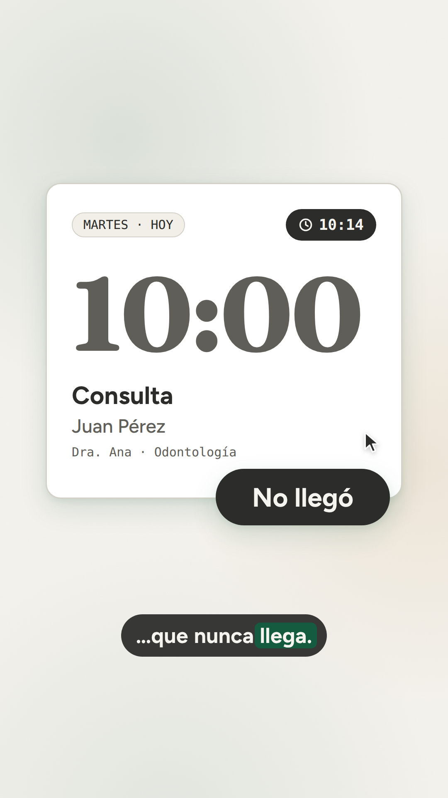
"Diez de la mañana. Ana espera a su paciente… que nunca llega." La tarjeta de las 10:00 se apaga con el sello "No llegó".
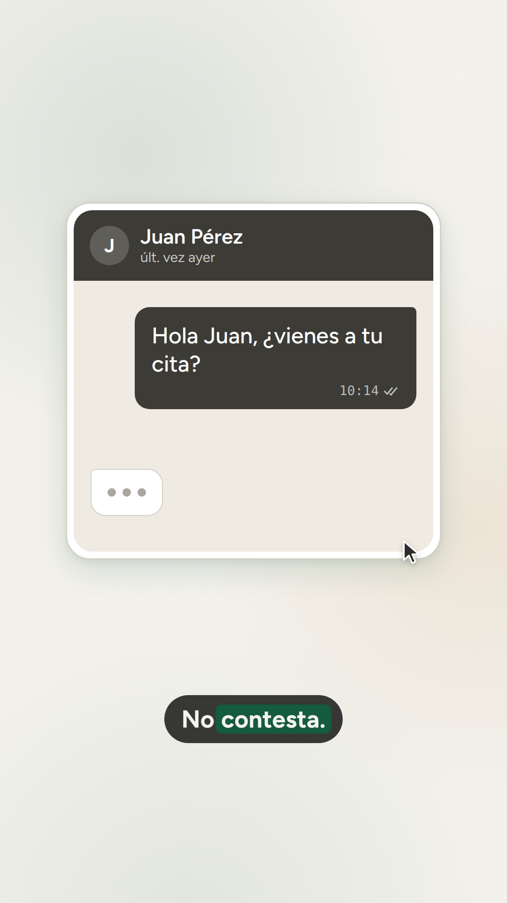
"No avisó. No contesta." El chat, todavía en gris: ✓✓ sin respuesta y un "escribiendo…" que se va.
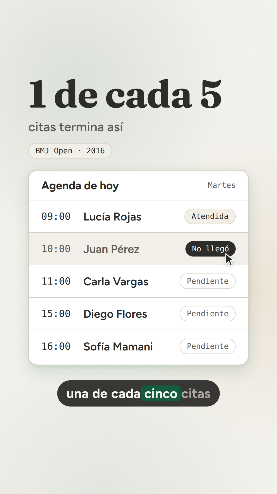
"…una de cada cinco citas termina así." La burbuja se vuelve el hueco de las 10:00 en la agenda del día.
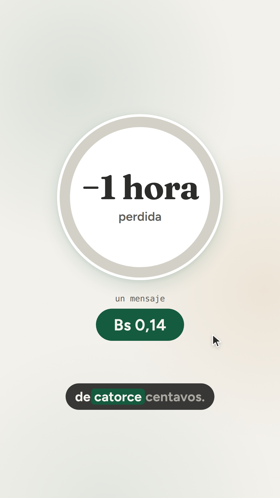
"Una hora perdida… que se pudo evitar con un mensaje de catorce centavos." Aparece el primer verde.
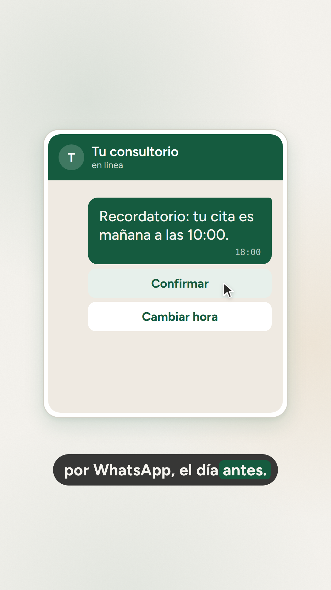
"La solución es simple: un recordatorio por WhatsApp, el día antes." El chat del mock de Parlana; el cursor llega a "Confirmar".
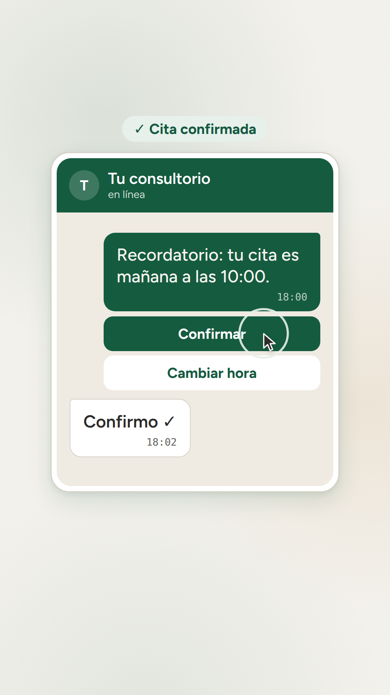
Beat sin voz: el toque en "Confirmar" y la respuesta del paciente en el mismo chat.
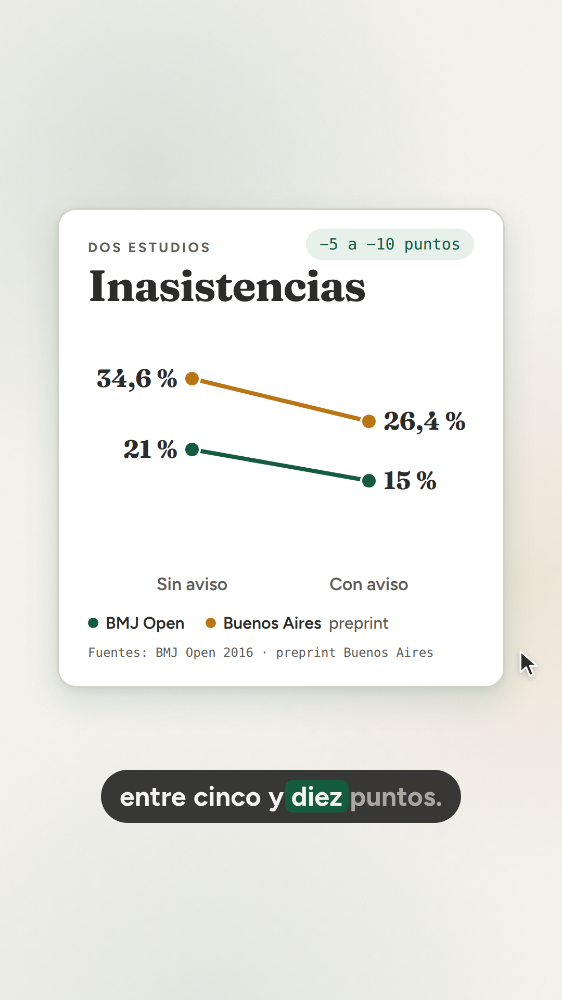
"Los estudios muestran que un aviso baja las inasistencias entre cinco y diez puntos." El gráfico del propio blog.
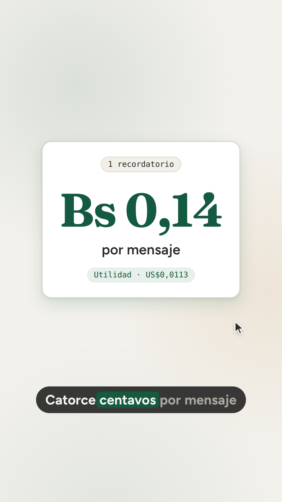
"¿Cuánto cuesta? Catorce centavos por mensaje, por la API oficial." Quietud: la cifra sola.
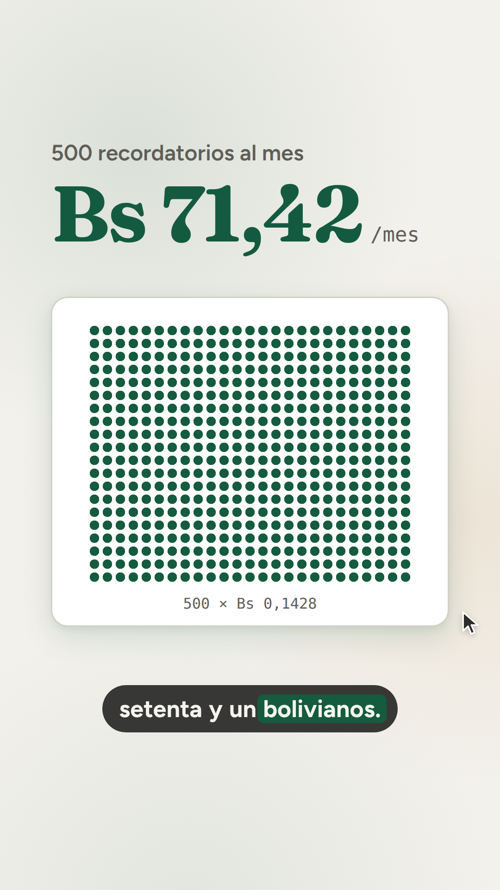
"Quinientos recordatorios al mes: setenta y un bolivianos." 500 puntos verdes, uno por recordatorio, mientras el total llega a Bs 71,42.
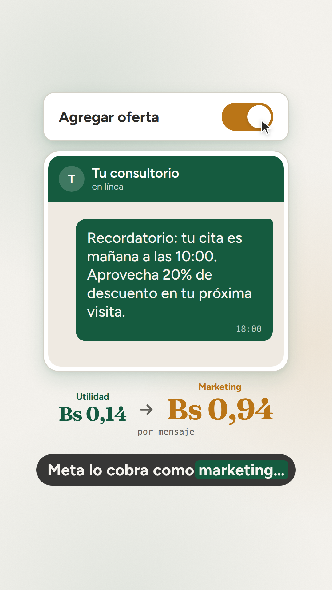
"…Meta lo cobra como marketing… y pasa de catorce a noventa y cuatro centavos." El toggle pasa el mensaje de Utilidad (Bs 0,14) a Marketing (Bs 0,94) y vuelve.
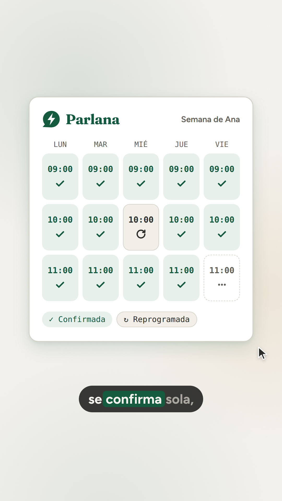
"Con Parlana, cada cita se recuerda y se confirma sola, en el mismo chat." La semana de Ana, confirmada.
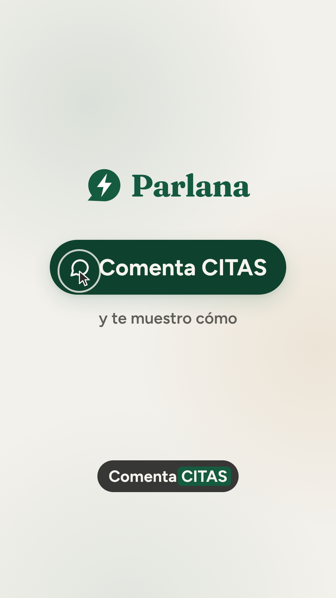
"¿Quieres que no te pase lo de Ana? Comenta CITAS y te muestro cómo." En el último segundo vuelve la tarjeta de las 10:00, confirmada.